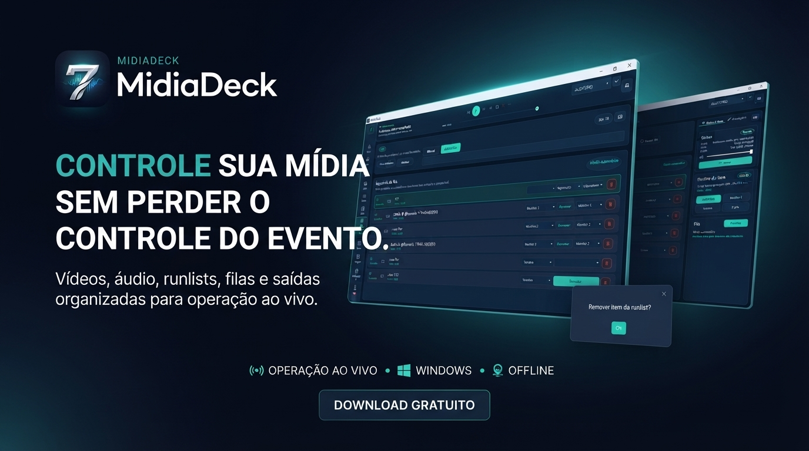
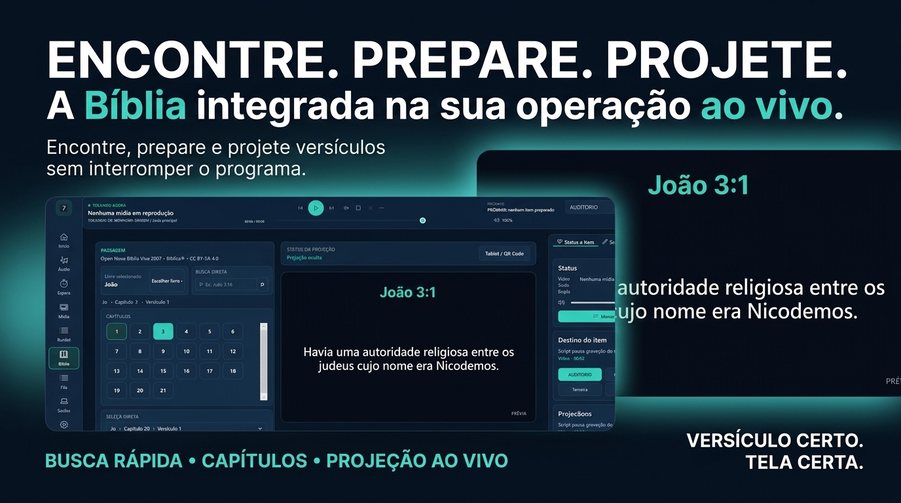

Veja o produto em ação
Uma operação clara em cada tela.



Recursos para operar melhor
O essencial para tocar midias com calma durante a programacao.
Tudo separado
Coloque videos, audios, imagens e vinhetas em um lugar facil de achar.
Fila pronta
Deixe a sequencia preparada antes do culto, reuniao, live ou apresentacao.
Menos sustos
Use um fluxo pensado para operador: encontrar, preparar e tocar sem ficar cacando arquivo.
Fluxo preparado
Monte sequências para cada momento e mantenha a operação previsível.
Destino certo
Escolha a tela principal, secundária ou dupla sem expor a interface.
Operação offline
Tenha seus arquivos no computador e menos dependência durante o evento.
Bíblia mais ágil na operação
Seleção de livros aprimorada, navegação por teclado e modos compacto ou visual para os versículos.
Fila com próximo item estável
O painel mostra o áudio ou vídeo atual e o próximo item pendente sem piscar ou desaparecer.
Projeção bíblica mais fluida
A troca de versículos ficou mais leve e a fonte se adapta melhor aos textos longos na tela.
Áudio com mais contexto
O cabeçalho mostra a música em reprodução e só exibe próxima faixa quando ela estiver realmente programada.
Tela de Espera sem limite de uma hora
Defina o horário de término e acompanhe o tempo restante corretamente em horas, minutos e segundos.
Instalador principal
MidiaDeck para Windows
Para quem e
Operadores de som, midia e projecao
Recomendacao
Baixe sempre por este site
Baixar instalador
Baixar plugin Bíblia Totem v1.0.10 (.zip)
Baixar plugin Roleta da Sorte v1.1.0 (.zip)
Ver antes de instalar
01
Baixe e instale
Use o botao de downloads e siga o instalador do Windows.
02
Separe suas midias
Adicione videos, audios e imagens, depois organize playlists e listas do evento.
03
Toque na hora certa
Use fila, telas e audio de fundo para seguir a programacao com mais seguranca.
Código aberto e licenças
O MidiaDeck usa ferramentas livres de mídia com créditos e avisos públicos.
O MidiaDeck pode acompanhar mpv, FFmpeg, ffprobe e bibliotecas auxiliares para tocar vídeos, analisar arquivos e gerar miniaturas. Esses componentes são usados como programas externos e continuam pertencendo aos seus respectivos projetos e autores.
O instalador inclui avisos de terceiros e textos de licença. O usuário também encontra essas informações dentro do aplicativo, na tela Ajuda, em Código aberto e licenças.
PLAYER
mpv
Usado como executável externo para reprodução de vídeo e áudio.
Site oficial Código-fonte Licença e copyright
MÍDIA
FFmpeg e ffprobe
Usados para leitura de metadados, miniaturas e apoio ao processamento de mídia.
Site oficial Código-fonte Informações legais
BUILD WINDOWS
Gyan.dev
Builds Windows de FFmpeg podem ser usados como referência de distribuição.
Builds e licenças Aviso completo
Resumo:
o MidiaDeck não se apresenta como autor desses componentes. Ao distribuir o app com esses
binários, mantemos créditos, textos de licença e links para o código-fonte correspondente
dos projetos livres.
Apoio opcional
Quero apoiar
Gostou do MidiaDeck?
Se o programa ajudou sua igreja, evento ou equipe de midia, voce pode apoiar o projeto. E totalmente opcional.
Chave ou contato para apoio: alan.xdparker@gmail.com
Duvidas rapidas
Respostas simples para baixar, atualizar e usar no dia a dia.
Posso usar em igreja, escola, evento ou apresentacao?
Sim. O MidiaDeck foi pensado para quem precisa tocar midias ao vivo com organizacao e rapidez.
Como vejo se existe uma versao nova?
O programa pode avisar quando houver atualizacao, e este site sempre aponta para o download oficial.
A doacao e obrigatoria?
Nao. O apoio e apenas para quem quiser ajudar o projeto a continuar evoluindo.
01
Coleta de dados
O aplicativo Midiadeck Controle não coleta, armazena, compartilha, vende ou transfere dados pessoais dos usuários.
02
Uso do aplicativo
O aplicativo é utilizado para controle remoto e/ou interação com funcionalidades relacionadas ao sistema Midiadeck. As informações utilizadas localmente no dispositivo são necessárias apenas para o funcionamento do aplicativo e não são enviadas para servidores externos.
03
Permissões do dispositivo
O aplicativo pode solicitar permissões do dispositivo apenas quando forem necessárias para executar suas funcionalidades. Nenhuma permissão é utilizada para coletar dados pessoais sem o consentimento do usuário.
04
Compartilhamento de dados
O aplicativo Midiadeck Controle não compartilha dados pessoais dos usuários com terceiros.
05
Segurança
Como o aplicativo não coleta nem armazena dados pessoais em servidores próprios, não há tratamento externo de informações pessoais do usuário. Mesmo assim, buscamos manter o funcionamento do aplicativo de forma segura e adequada.
06
Crianças
O aplicativo Midiadeck Controle não é direcionado a crianças menores de 13 anos.
07
Alterações nesta Política de Privacidade
Esta Política de Privacidade pode ser atualizada futuramente para refletir alterações no aplicativo, em requisitos legais ou nas políticas da Google Play. A versão mais recente estará sempre disponível nesta página.
08
Contato
Em caso de dúvidas sobre esta Política de Privacidade, entre em contato pelo e-mail: alan.xdparker@gmail.com
Última atualização
09/08/2026